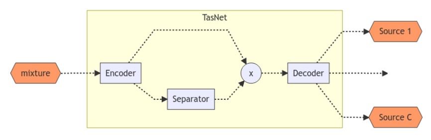

Automatic Lyrics Transcription from Single Audio Channel Homophonic Music Recordings
The Task
To recognise sung speech from an accompaniment singing.

Breaking down the task
The project was split into three components or stages.
- Unaccompanied singing recognition.
- Audio source separation and singer enhancement.
- Jointly optimise the singer enhancement with the acoustic model

Stage 1
Considered a complete stage!
- Two papers
- Automatic Lyric Transcription from Karaoke Vocal Tracks: Resources and a Baseline System (Interspeech 2019).
- The Use of Voice Source Features for Sung Speech Recognition (to be submitted ICASSP 2021).
Stage 2
Plan Proposed in 24-month panel
- Baseline replication.
- Audio source separation (ASS) experiments.
- Musically motivated features for ASS.
- Beat information for AM.
Stage 2
Dataset
- Damp Vocal Separation - DAMP-VSEP
- 41000 30-sec segments - 20800 solo ensemble.
- 155 countries and 36 languages - 8500 English performances.
- 6456 singers.
- 11494 song arrangements.
Stage 2
Dataset
| Dataset | Utt | Size |
|---|---|---|
| English train | 9243 | 77 Hrs |
| Solo train | 20660 | 174 Hrs |
| Validation | 100 | 0.8 Hrs |
| Evaluation | 100 | 0.8 Hrs |
Stage 2
DAMP-VSEP characteristics
Different backgrounds are perceptually identical.

Stage 2
DAMP-VSEP challenges
- Non-linear effects.
- Vocal in mixture is scaled.
- Vocal in background.
Mixture :
Vocal :
Background :
Stage 2
DAMP-VSEP challenges
- Vocal is shifted in relation with the mixture.
- Vocal mixed in the background.
Mixture :
Vocal :
Background :
Stage 2
Model Architecture

Stage 2
Preliminary Results
English train set
| Exp | Mixture | M | R | SDR | SI-SDR | STOI |
|---|---|---|---|---|---|---|
| 1 | Remix | 8 | 4 | 10.65 | 9.62 | 0.6943 |
| 2 | Remix | 10 | 4 | 14.43 | 13.90 | 0.7597 |
Solo ensemble train set
| Exp | Mixture | M | R | SDR | SI-SDR | STOI |
|---|---|---|---|---|---|---|
| 3 | Remix | 10 | 4 | 15.21 | 14.70 | 0.7666 |
| 4 | Original | 10 | 4 | 3.37 | -13.47 | 0.5771 |
Composite Loss function
| Exp | M | R | Alpha | SDR (V/B) | SI-SDR (V/B) | STOI (V) |
|---|---|---|---|---|---|---|
| 5 | 10 | 4 | 0.1 | 2.38/13.62 | -15.92/-2.04 | 0.6530 |
| 6 | 10 | 4 | 0.5 | 2.85/11.81 | -3.67/-1.62 | 0.6401 |
Stage 2
Musically Motivated Features
The use instrument embedding features.
- Train a convolutional autoencoder for instrument classification.
- Use embedding features to inform the model about the music.